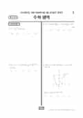

문제지

문항 검색 · 시험지 만들기준비하고 있어요. 열리면 아래 탭에서 바로 쓸 수 있어요.
2026학년도 9월 모의평가 · 2025년 9월 시행
2026학년도 9모 수학 기하 1등급컷은 원점수 89점(추정), 표준점수 최고점은 140점입니다.
원점수 1등급컷은 공식 발표값이 아니라 EBSi·입시기관 값입니다. 등급별 값은 등급컷 표, 출처 구분은 데이터 원칙에 있습니다.

정답 변경 없음
이의신청 2문항
시험 전체 관련 보도 4건은 2026학년도 9월 모의평가 회차 페이지에 모아 두었어요.
수학 영역 전체 응시자 기준입니다. 한국교육과정평가원이 교육부 보도자료로 공개한 표준점수 도수분포로 계산했습니다.
EBSi 응답자 기준으로 가장 많이 틀린 문항은 21번(4점, 주관식)이고, 오답률은 94.3%입니다. 상위 15문항 중 2문항은 정답보다 한 오답을 고른 사람이 더 많았습니다(15번: 정답 ⑤ 22.9%, ④ 23.9%). 오답률 50%를 넘은 문항은 8개입니다.
| 순위 | 문항 | 배점 | 오답률 | 정답 | 많이 고른 오답 |
|---|---|---|---|---|---|
| 1 | 21번 | 4점 | 94.3% | 296 | 주관식 |
| 2 | 30번 | 4점 | 92.7% | 69 | 주관식 |
| 3 | 22번 | 4점 | 92% | 73 | 주관식 |
| 4 | 15번 | 4점 | 77.1% | ⑤ | ④ 23.9% |
| 5 | 28번 | 4점 | 74.8% | ④ | ⑤ 32.9% |
| 6 | 29번 | 4점 | 72.2% | 396 | 주관식 |
| 7 | 13번 | 4점 | 61.6% | ④ | ③ 28.7% |
| 8 | 11번 | 4점 | 50.1% | ⑤ | ② 28.4% |
| 9 | 20번 | 4점 | 49.5% | 12 | 주관식 |
| 10 | 12번 | 4점 | 45.6% | ① | ③ 16% |
| 11 | 14번 | 4점 | 44.4% | ③ | ④ 17.9% |
| 12 | 9번 | 4점 | 42.3% | ② | ③ 13.1% |
| 13 | 27번 | 3점 | 39.7% | ② | ③ 16.8% |
| 14 | 6번 | 3점 | 35.1% | ⑤ | ① 16.4% |
| 15 | 19번 | 3점 | 30.8% | 10 | 주관식 |
EBSi 가채점 응답자 기준 · 전 문항 중 오답률 상위 15문항
출처: EBSi 역대 등급컷·오답률 공개 화면. 가채점에 참여한 EBSi 이용자 응답이라 전체 응시자 정답률과는 다를 수 있습니다.
발행 기관: 한국교육과정평가원(KICE). 파일 위치: 이 사이트가 보관한 사본. 저작권은 발행 기관에 있습니다. 원본과 다르거나 게시 중단이 필요하면 연락처로 알려 주세요. 등급컷 출처 구분은 데이터 원칙에서 설명합니다.
막대 색은 역대 대비 난이도 · 진한 막대가 이 시험 · 막대를 누르면 그 회차로 이동
공통과목 21번(4점)은 최고차항의 계수가 정해진 삼차함수가 0이 아닌 모든 실수에서 도함수와 관련된 부등식을 만족시키는 조건으로 미분계수를 구하는 문항으로, EBSi 가채점 응답자의 94.3%가 틀려 세 선택과목 모두에서 오답률 1위였습니다.
22번(92.0%)은 로그함수 곡선 위의 두 점 A, B에서 A로부터 내린 수선의 발 P와 B를 대칭이동한 점 Q로 만든 사각형 APQB의 넓이 조건을 다룬 지수·로그 그래프 문항이었습니다. 함수의 극한·극값 조건을 다룬 15번(77.1%)도 고난도로 꼽혔습니다. 전체적으로는 평이했지만 21·22번 두 문항이 최상위권을 가른 구조였습니다.
기하 30번(92.7%)은 두 변의 길이가 같은 삼각형 ABC의 세 변 위의 점 P, Q, R이 벡터 조건을 만족할 때, 또 다른 조건을 만족하는 점 X와 B 사이 거리의 최댓값과 최솟값을 구하는 평면벡터 문항입니다. 기하 응시자 기준으로는 공통 21번 다음으로 오답률이 높았습니다.
기하 응시 비율은 2.7%에 그쳤습니다.
21번 같은 부등식 조건 문항은 등호가 성립하는 지점에서 함수와 도함수가 어떤 관계를 갖는지 그래프로 해석하는 연습이 핵심입니다. 이 회차부터 수능까지 22번이 계속 지수·로그 그래프로 출제되었다는 점도 함께 기억해 두면 좋습니다.